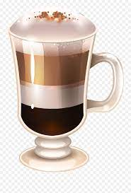
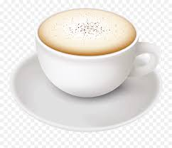

Coffees i like:
Latte Machiato
Een latte macchiato bestaat uit warme melk, melkschuim en espresso. Wanneer de latte macchiato op een juiste manier gemaakt is, ontstaan er de bekende drie lagen in het glas. Hierdoor is deze warme drank niet alleen een heerlijke drank is om te drinken, maar ook een lust voor het oog.
Cappuccino
De oorsprong van de cappuccino wordt geclaimd door Wenen. De naam cappuccino is namelijk afgeleid van “Kapuziner Kaffee". Toch staat cappuccino tegenwoordig bekend als een Italiaanse koffie. Wij in Nederland zijn gewend om de hele dag door cappuccino’s te drinken. In Italië gaan ze daar anders mee om. Zij drinken de cappuccino alleen in de ochtend.
